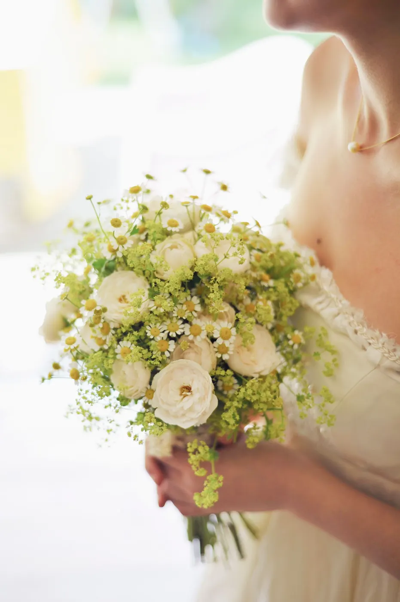
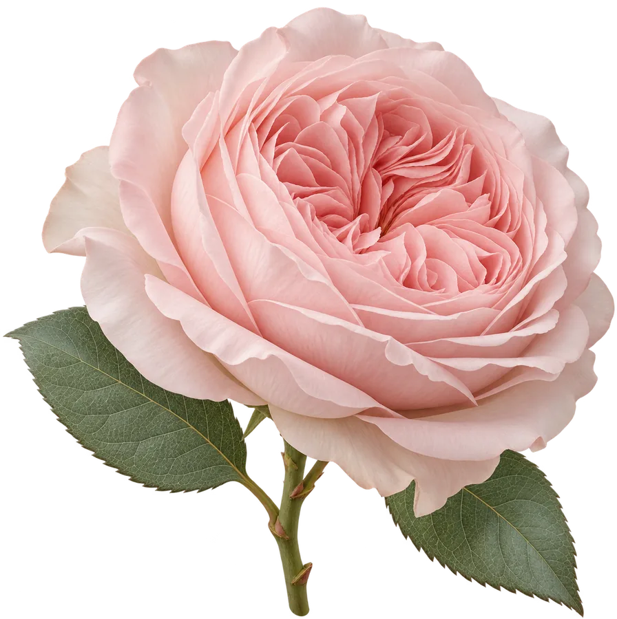
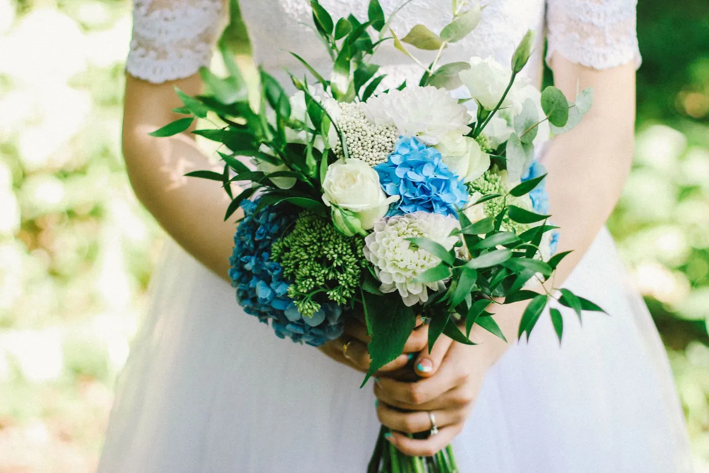
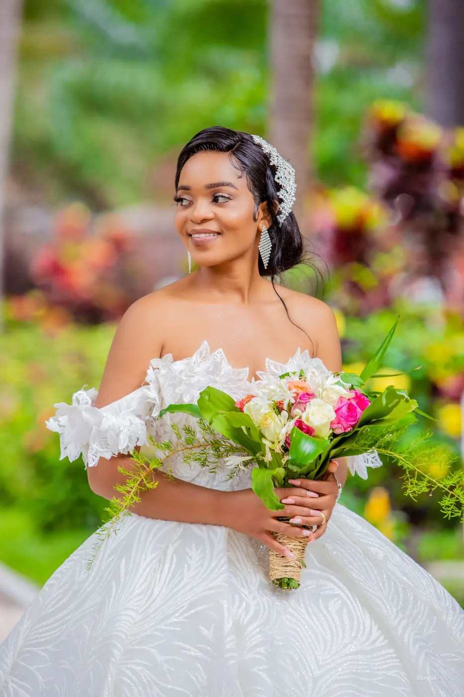
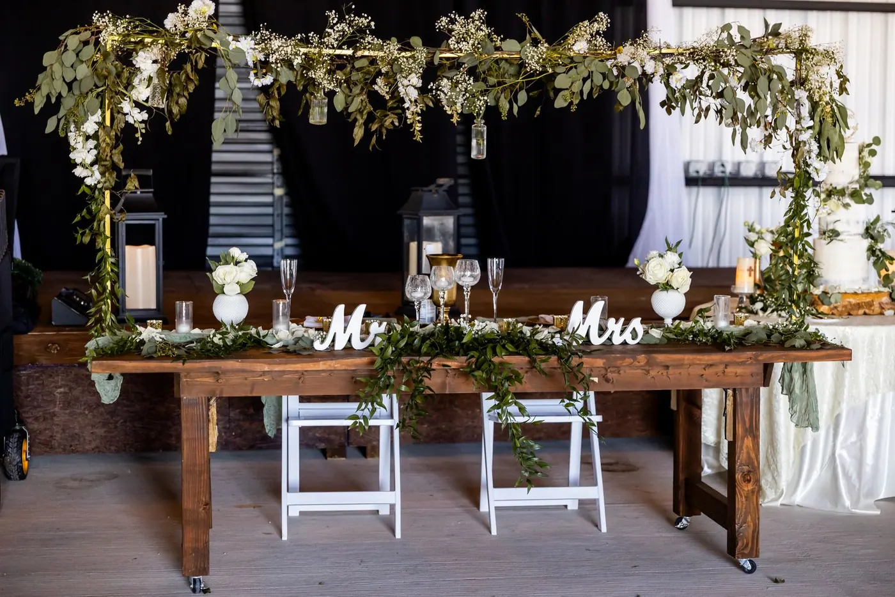
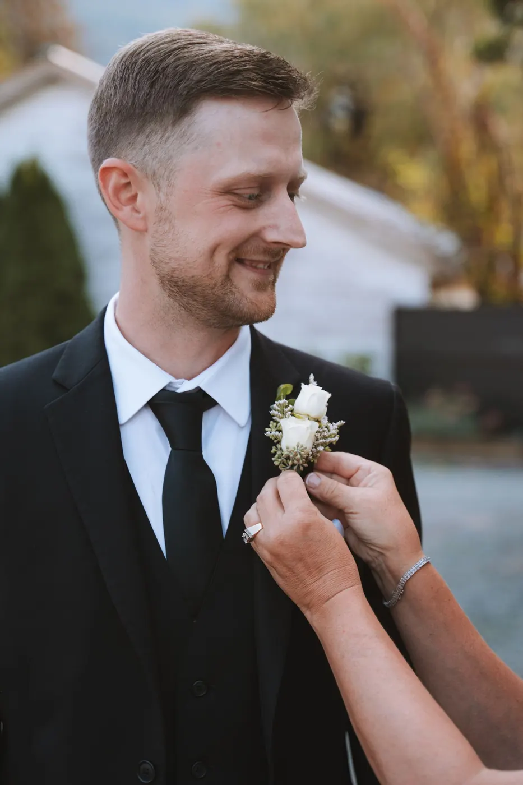
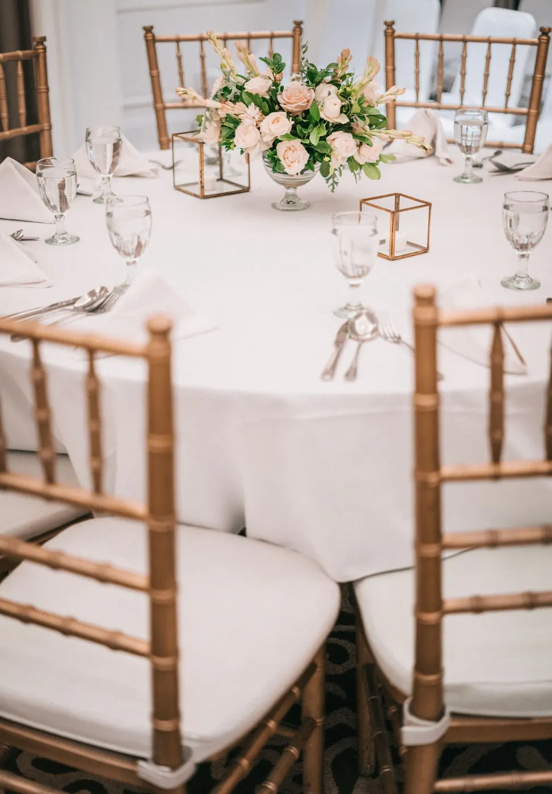
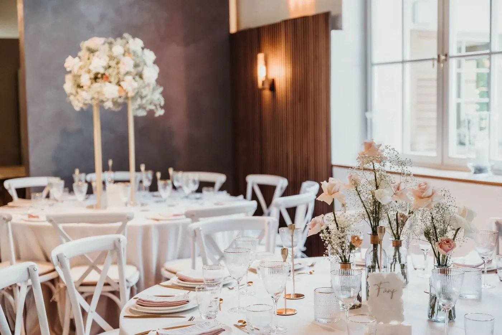
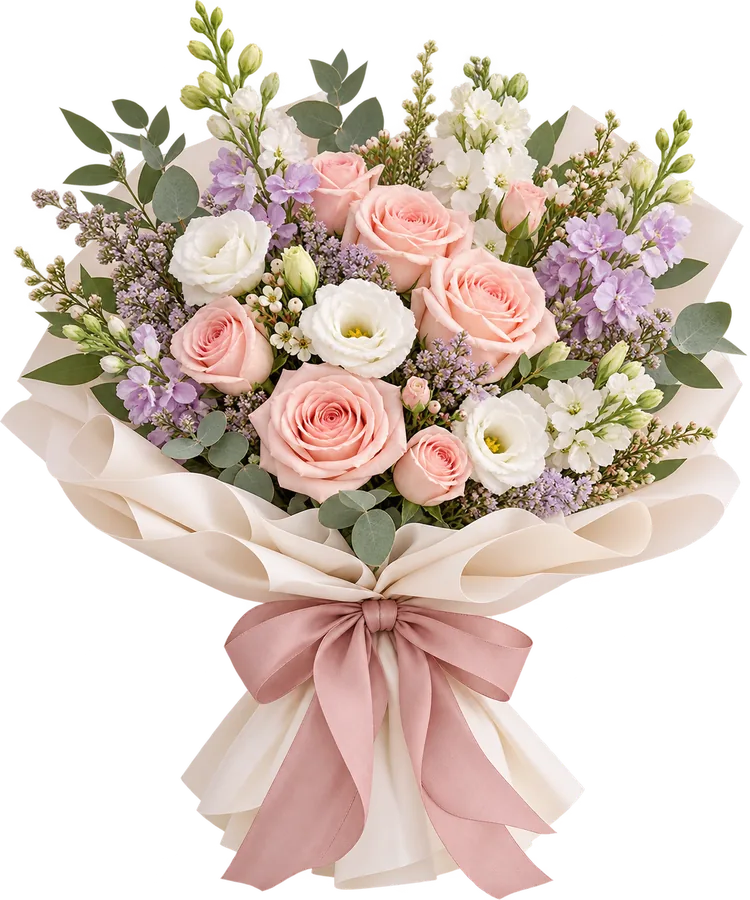

01
Ramo de novia
La pieza protagonista. Redondo, en cascada o silvestre, diseñado para ti y para tu vestido.
Creamos arreglos florales que capturan la esencia de tu amor y complementan el tema de tu boda. Desde el ramo que llevarás en la mano hasta la última mesa del banquete.
 Imagen de banco · pendiente de foto original
Imagen de banco · pendiente de foto original
«Creamos arreglos florales que capturan la esencia de tu amor y complementan el tema de tu boda.»
Nos sentamos con vosotros para conocer el lugar, la época del año, el estilo del vestido y lo que queréis transmitir. A partir de ahí proponemos flores, colores y formas que hablen el mismo idioma en cada rincón de la celebración.
Puedes encargarnos solo el ramo o confiarnos la decoración floral completa. Toca las imágenes para ampliarlas.
La pieza protagonista. Redondo, en cascada o silvestre, diseñado para ti y para tu vestido.

Para el novio, padrinos y familia, a juego con el ramo para que todo respire armonía.

Arcos, altares y bancos decorados para que el «sí, quiero» tenga el marco que merece.

Pétalos, cabeceras de banco y centros de altar para acompañar vuestra entrada.

Centros bajos para conversar, altos para impresionar o caminos de mesa con verde y flor.

Mesa presidencial, rincones, photocall y detalles que convierten un espacio en vuestro espacio.
Cuatro estilos para empezar a imaginar. Todos se adaptan a las flores de temporada y a tu paleta.

Compacto y elegante. Perfecto con rosas y paniculata para vestidos de líneas limpias.
Cae con movimiento hacia delante. Ideal para vestidos largos y ceremonias solemnes.
Aire de campo recién cortado, con verdes, margaritas y flores pequeñas en libertad.
Pocas flores, muy bien elegidas: una orquídea, unas calas o un puñado de rosas.
Escríbenos por WhatsApp con la fecha, el lugar y tus ideas. Fotos del vestido o de referencias ayudan mucho.
Te proponemos flores, colores y piezas según la temporada, el estilo y el presupuesto.
Afinamos cada detalle contigo hasta que todo encaja y confirmamos el encargo.
Preparamos cada pieza con flor fresca para que llegue perfecta a vuestra boda.
Cuanto antes, mejor. En cuanto tengáis fecha y lugar, escríbenos: así podemos reservar el día y planificar las flores de temporada. Los plazos concretos se confirman directamente con la floristería.
¡Claro! Las referencias de Instagram o Pinterest, una foto del vestido y del lugar nos ayudan a entender lo que imagináis y a proponer algo coherente.
Sí. Puedes encargar únicamente el ramo o sumar prendidos, ceremonia y banquete. Nos adaptamos a lo que necesites.
Depende de la temporada y la disponibilidad. Trabajamos habitualmente con rosas, lirios, tulipanes, orquídeas, girasoles, claveles y margaritas, entre otras. Te diremos qué opciones hay para tu fecha.
Según las piezas, el tamaño, las flores elegidas y la fecha. Cuéntanos qué necesitas y la floristería te preparará una propuesta personalizada.
Fotografías de banco de imágenes, pendientes de sustituir por bodas reales de Siempre Vive.







Cuéntanos la fecha, el lugar y el estilo que imagináis. El mensaje de WhatsApp ya indica que es para una boda.